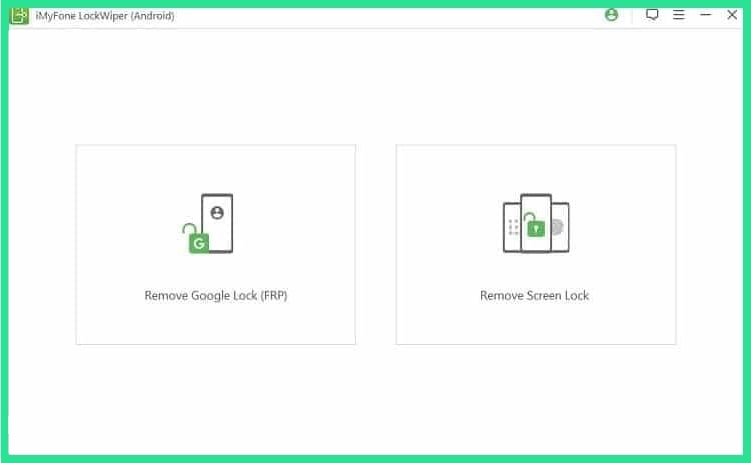
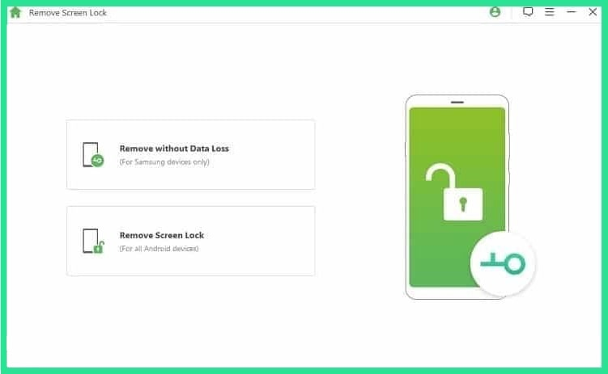
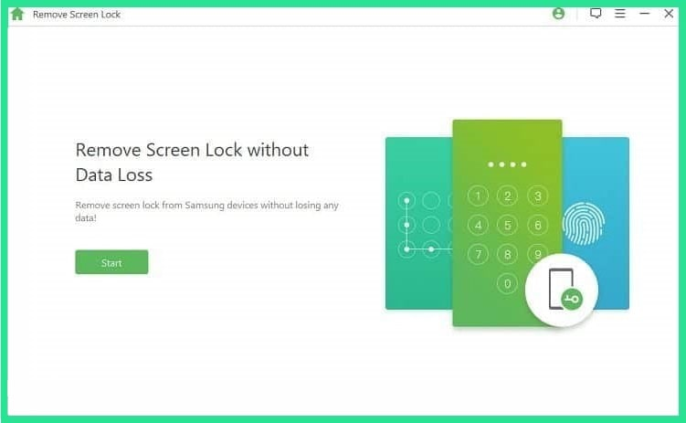
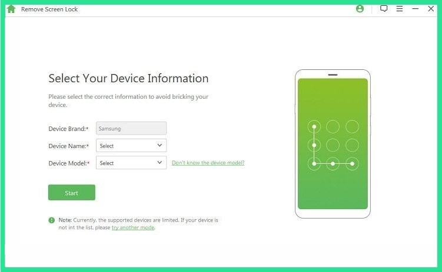
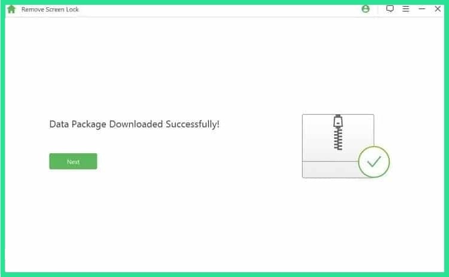
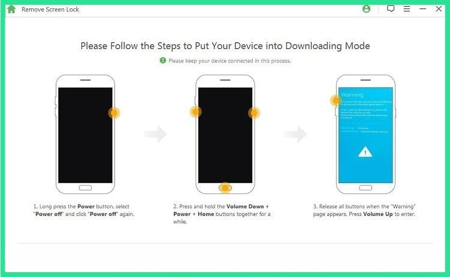

iMyFone LockWiper (Android) is yet another successful Android screen lock removal tool. It can remove the pattern, PIN, fingerprint, face lock & password lock on the mobile with an additional feature of FRP unlock. It supports more than 6000 Android devices, covering all major mobile manufacturers like LG, Motorola, Samsung, Lenovo, Honor, etc. iMyFone LockWiper (Android) is a simple to use Android phone unlocking software with a high success rate. It is suitable software for Samsung mobiles as it not just unlocks them but also secures any data loss. Screen locks on other mobile phones get removed, but the data inside gets erased. It can be installed on Windows 10/8/7 OS, with a 1 GHz processor and 1 GB RAM for efficient working. The users searching for an Android password removal tool, having the Android version between 2.3 and 9.0, can opt for this software to open the mobile. The trial version can be downloaded freely, while the paid version of the software is provided in three variations. Basic Plan can unlock only one device for a year, the Family Plan is for a lifetime for up to 5 instruments, and the Multi-User Plan is for a lifetime in a different price range.
(1)It supports most of the famous and high selling brands on Android.(2)It is compatible with Windows 10/8/7 OS having a 1 GHz processor, and 1024 MB RAM recommended.(3)It can remove five-screen lock types (pattern, PIN, password, fingerprints & face lock).(4)It can also remove the FRP lock.(5)Android mobiles with a version between 2.3 and 9.0 can be unlocked using this tool.(6)Thirty days money-back guarantee on paid versions.
(1)It can also remove the face lock on the mobile.(2)It is compatible with all Android mobile brands.(3)It provides 30 days money-back guarantee.
(1)It does not support Mac computers for installation.(2)The software is not updated to unlock the latest version of Android 10.0.(3)For smooth running, it requires 1 GB RAM.(4)The data gets erased on unlocking mobiles other than the Samsung brand.
The iMyFone LockWiper (Android) is a famous Android phone unlocking software that can remove five lock types on the mobile. The user may not be technically sound but can comfortably operate the software panel by reading the guided steps given on the website. A brief description of how to use iMyFone LockWiper (Android) is given here. Download and install the software on your PC and read the steps below to unlock your Android mobile.

Step 1:Launch the iMyFone tool on the PC and click on the “Remove Screen Lock” option.

Step 2:On the second page, choose the first option, “Remove Without Data Loss,” for Samsung mobiles. For any other Android mobile, choose the second option, “Remove Screen Lock.”

Step 3:Choose the applicable option and click “Start” on the next page.

Step 4:Select the Device Brand, Name & Model from the drop-down menu and click the “Start” button.

Step 5:It will start downloading the Data Package required for the device lock removal. Click the “Next” button when the downloading ends.
Step 6. Connect your locked Android to the PC via USB cable wire.

Step 7: The Samsung users will get the instructions on the page to put the mobile on “Downloading Mode.” Follow the process carefully and hit the “Start to Unlock button” to proceed. The other Android mobile users will be instructed to reset the device and wait. The process completes in a few minutes but will reopen the mobile without any password. The Samsung users can enjoy the device with complete data stored in it, while the other users will have to suffer the loss on the cost of getting full access on a refresh device.